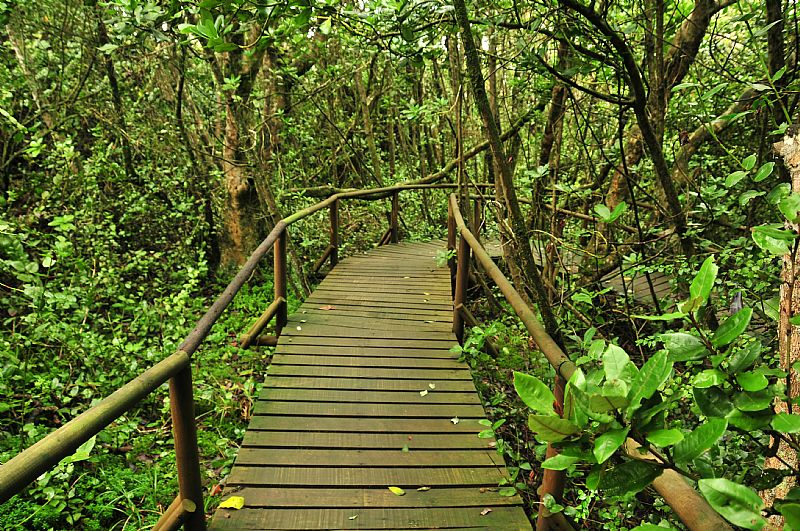

Bosque Fray Jorge
- Región: Coquimbo
- Comuna: Ovalle
- Tipo de patrimonio: Natural (Parque Nacional)
- Fecha/año de declaración: Parque Nacional desde 1941; Reserva de la Biósfera UNESCO desde 1977
- Estado de conservación: Protegido, Reserva de la Biósfera UNESCO
Bosque relicto ubicado en plena zona semiárida, sobrevive gracias a la humedad de la neblina costera, contrastando con el paisaje árido circundante.